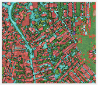
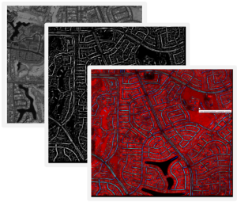
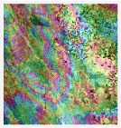
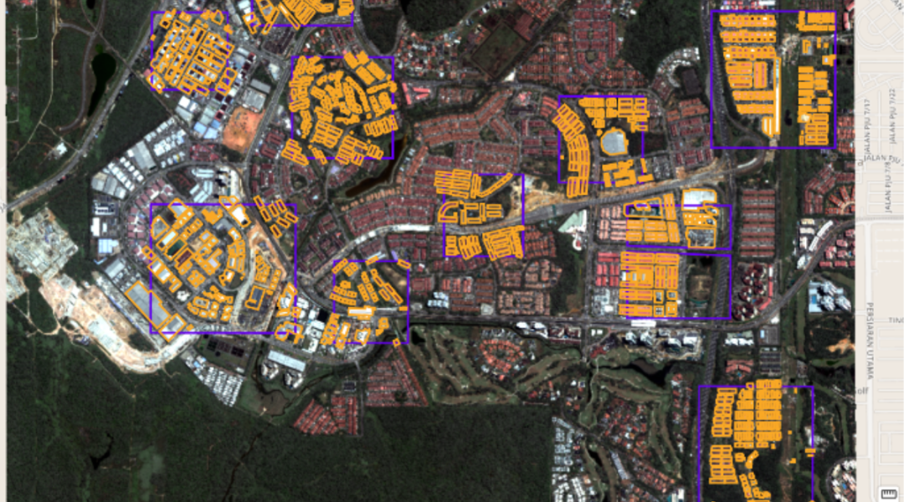
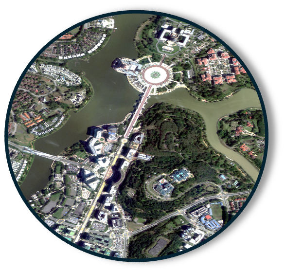
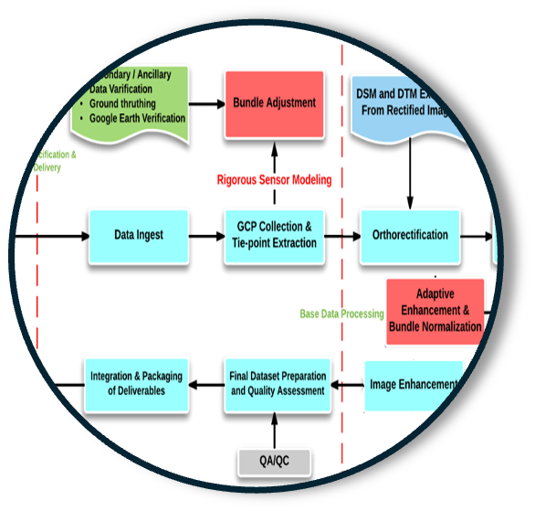
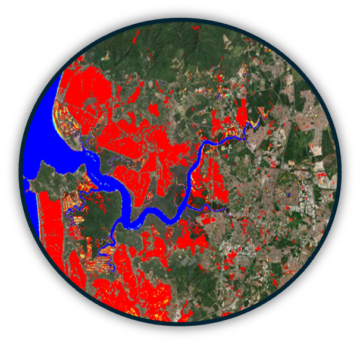
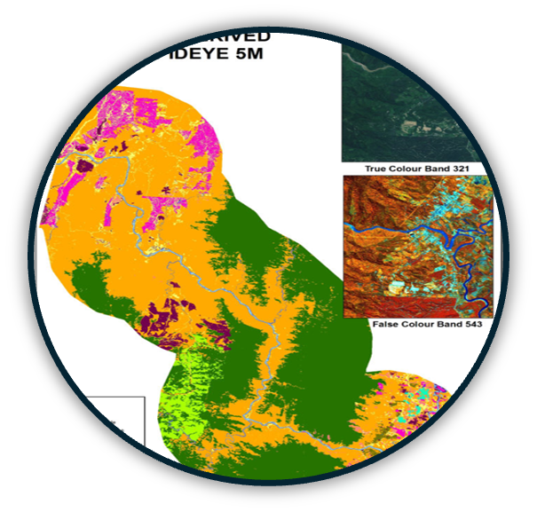

MAPPING & ANALYTICS
Geospatial AI, transforming raw location data into meaningful insights for decision-making across industries. Our advanced mapping technologies allow for real-time spatial data visualization, enabling users to understand complex geographic relationships and patterns effortlessly.
Satellite Image
Processing

Providing end-to-end mapping solutions for the entire process of mapping, from data collection to deliverables.
Satellite Image
Analysis

Transform imagery into information.
Satellite Radar
& InSAR

SAR satellite technology detect subtle changes on the earth’s surface.
The technology known as Interferometric Synthetic Aperture Radar (InSAR).

End-to-End Mapping Solutions
Providing end-to-end mapping solutions for the entire process of mapping, from data collection to deliverables.
DATA
COLLECTION

Collecting geographic spatial data
- Satellite Imagery
- Aerial Photography
- On-the-Ground Surveys
- Data from Existing Databases
DATA
PROCESSING

Data Cleaning, organizing, and preparing the collected data for mapping purposes.
- Georeferencing
- Data Normalization
- Quality Control
DATA
ANALYTICS

We provide advanced data analytics to extract valuable insights.
- Land Encroachment Monitoring
- Dam Monitoring
- Utility Vegetation Management
- Water pipeline Monitoring
- Ground Displacement
DATA
DELIVERABLES

- Map Design
- Customization
- Map Generation
- Real-time Updates
- Delivery
Remote Sensing &
Geospatial Analysis Techniques
Remote Sensing encompasses the acquisition and interpretation of information about the Earth’s surface without direct physical contact. This category includes various techniques and technologies used to gather spatial data, which are essential for GIS applications.